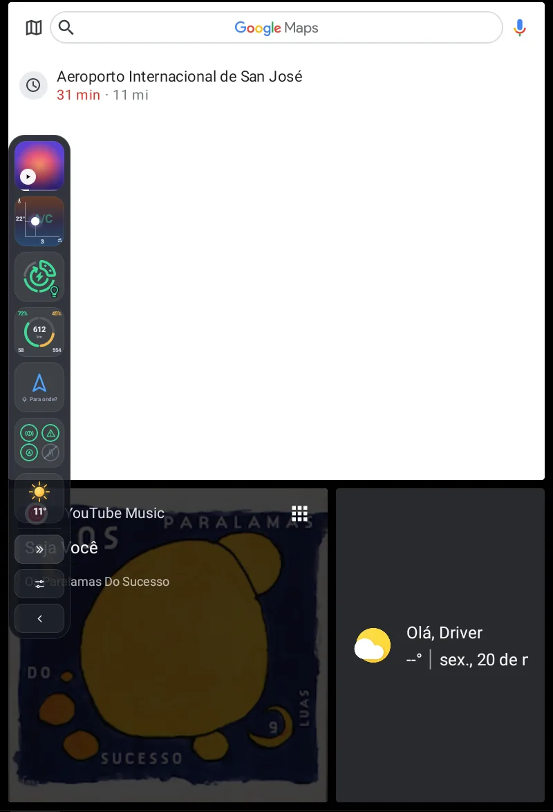
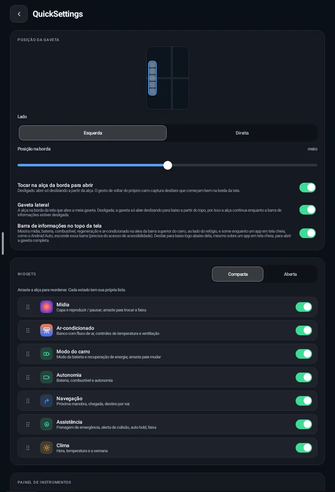
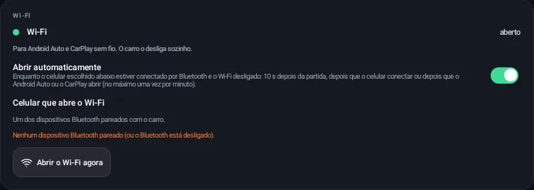
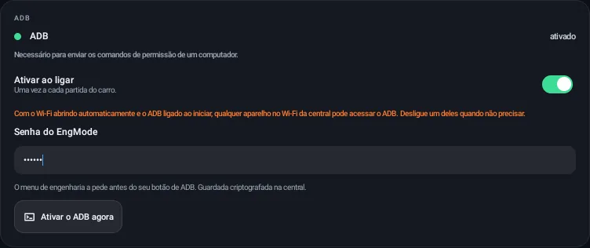

Uma gaveta de vidro que flutua sobre todos os apps da central: mídia, clima, modo da bateria, autonomia, navegação e assistência ao motorista, para ler de relance e controlar com um dedo.
Telas reais do app, rodando num emulador Android Automotive 11 (os valores do carro são simulados).

Barra lateral
Meia gaveta, de relance
Toque na alça na borda da tela e entra uma coluna de blocos pequenos: capa do álbum, o quadrante do clima, modo da bateria e regeneração, anéis de autonomia, próxima manobra, assistência e tempo. Pressione e arraste um bloco para mudá-lo sem abrir nada.
Gaveta completa
Todos os controles num deslize
Deslize para baixo logo abaixo da barra superior, mesmo sobre um app em tela cheia, para os cartões grandes: mídia com controles e volume, navegação, assistência com as travas originais, o banco do clima, modo da bateria e regeneração, autonomia e tempo. Os controles de temperatura e ventilação ficam nas laterais.
Sem rotaCom rota
Barra superior
Informações ao lado do relógio
Mídia, bateria e combustível com a autonomia de cada um, recuperação de energia e clima ficam na própria barra superior do carro. Com uma rota, a próxima manobra entra junto e a autonomia vira um anel. Ela sai da frente enquanto um app em tela cheia, como o Android Auto, esconde essa barra.

Ajustes
Do seu jeito
Escolha o lado e a altura da alça, toque ou deslize para abrir, ligue ou desligue a barra de informações e reordene ou esconda widgets separadamente para a meia gaveta e a gaveta aberta. O painel Status mostra ao vivo a ligação com o carro, a mídia e o acesso às notificações.

Automação do Wi-Fi
Wi-Fi aberto para Android Auto e CarPlay sem fio
O carro desliga o Wi-Fi sozinho. Escolha o seu celular e o QuickSettings abre o Wi-Fi enquanto ele estiver conectado por Bluetooth: 10 s depois da partida, quando o celular conecta ou quando o Android Auto ou o CarPlay abre, no máximo uma vez por minuto.

Automação do ADB
ADB ligado, sem passar pelos menus
Salve uma vez a senha do menu de engenharia (guardada criptografada na central) e o app liga a depuração USB por você, quando pedir ou uma vez a cada partida do carro. Ele avisa quando Wi-Fi e ADB estão ambos automáticos.
Seis widgets, dois tamanhos
Toque na alça da borda para abrir a gaveta pela metade: blocos pequenos para ler de relance, com atalhos de pressionar e arrastar. Abra por completo para os cartões grandes e todos os controles. Em português e inglês.
Mídia
Apps da central e as fontes do próprio carro: Bluetooth, USB, CarPlay, Android Auto. Arraste para volume e faixas; busca por voz enviada ao app que está tocando.
Clima
Um quadrante temperatura × ventilação: arraste o marcador e o valor é aplicado ao soltar. Liga/desliga, automático, sincronia de zonas e recirculação seguem o estado do carro.
Modo do carro
Modo da bateria (Inicial, Inteligente, Forçada com meta de carga) e recuperação de energia Baixo, Médio, Alta, um toque cada.
Autonomia
Anéis de bateria e combustível, autonomia elétrica e a combustão em km e %, e o total.
Navegação
Próxima manobra, rua e chegada do seu app de navegação; destino por voz sem rota; mande o mapa para o painel de instrumentos e traga de volta.
Assistência
Frenagem de emergência, auto hold, prevenção de saída de faixa e alerta de colisão, com as regras da tela original e um segundo toque para desligar uma função de segurança.
Como funciona
O QuickSettings conversa com o carro pelos serviços da própria central, os mesmos que os apps originais usam, através da biblioteca de código aberto jconfig-carbus.
Nada muda sozinho
Toda mudança no carro vem de um toque seu, de soltar um controle deslizante ou de soltar um arraste. As funções de segurança mantêm as travas originais.
Sempre ali
A gaveta roda como serviço em primeiro plano desde a partida, e o acesso às notificações a traz de volta se o sistema a encerrar.
Valores ao vivo
O carro não avisa os apps quando algo muda, então a gaveta consulta a cada 1,5 s enquanto está na tela, e logo depois de cada mudança.
Configure pelo navegador
A central não tem tela de ajustes para sobrepor a outros apps nem para o acesso às notificações, então essas permissões são dadas por ADB. Esta página faz isso por você com um cabo USB, sem instalar nada no computador.
Instale no carroCom um gerenciador de arquivos na central, depois abra o QuickSettings uma vez.
Ative a depuração USBNo menu de engenharia do carro, depois ligue um cabo de dados deste computador ao carro.
Conecte e concedaAqui embaixo, no Chrome ou Edge. O microfone (busca por voz) é concedido no próprio app.
Central
Carregando…
Dúvidas
Quais navegadores funcionam?
Chrome, Edge ou outro navegador Chromium com WebUSB, no Windows, macOS, Linux ou ChromeOS. O Chrome de um celular Android também serve, com um adaptador USB-OTG. Firefox e Safari não têm WebUSB.
A conexão falha ou o carro não aparece na lista
Use um cabo de dados, não um só de carga. Se você tem as ferramentas do Android instaladas, provavelmente outro adb está segurando a porta: rode adb kill-server e tente de novo. No Windows a central pode precisar do driver USB do Google.
O que esta página roda no meu carro?
Só os comandos mostrados em "Comando manual" de cada item, mais verificações de leitura (appops get, settings get, dumpsys package). Ela não instala nada, e nada é enviado a lugar nenhum além do carro, pelo cabo.
Preciso fazer isso de novo?
Não. As permissões continuam depois de reiniciar e de atualizar o app. Desinstalar o app as remove.
Prefiro digitar os comandos
Todos os comandos estão no README, e a tela de ajustes do app mostra cada um que falta.